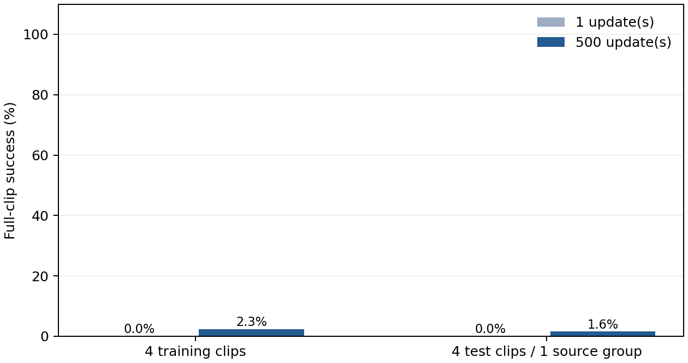
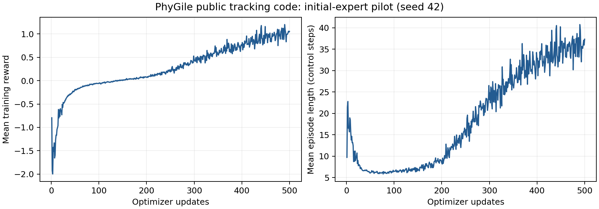

日期：2026-10-17。对象：公开 GMT 跟踪模块的仿真运行与缩小规模验证。完整论文方法的复现状态：未完成，缺少公开生成组件及对应材料。
本次已在原双 RTX A6000 服务器上跑通官方跟踪代码，完成一次独立冒烟验证、500 次 PPO 更新，以及 16 组检查点—片段组合评估。所有结果来自实际 Isaac Lab 仿真；没有真机实验。
不能把这份模型标成“完整 PhyGile 复现模型”或把这些数字填入论文正式对比主表。 当前只有起始专家被激活，训练数据仅约 1 分钟，测试只有一个独立来源组。最终检查点在本协议的测试片段上完成 2/128 个完整回合。
可用于后续开发的是已验证的跟踪训练工程、失败判定、输入检查和结果记录流程。完整文本到机器人动作比较仍需补齐下述材料。
官方网页仅给出 Code (Tracking)，链接到 Baojch/phygile_tracking。固定源码提交 d48621620f522f5c901ef378d57db8df92d2888d，提交日期 2026-04-25。论文阅读版本为 arXiv:2603.19305v3（2026-08-30）。不同时间的公开材料可能存在差异，不能默认代码与论文所有设置一致。
| 组件 | 核查与复现状态 |
|---|---|
| GMT 跟踪器、MoE、PPO 和 Phase A/B 配置 | 代码存在；本次执行其起始跟踪阶段 |
| 262D robot-native 扩散生成器、TP-MoE 文本条件部分 | 在所查仓库中未找到完整实现或权重入口 |
| physics-prefix 续写、闭环适配训练 | 论文有描述，所查仓库中未找到完整运行入口 |
| 作者 GMT 权重 | 检查时 GitHub releases 为空，README 未提供可用检查点下载 |
| 论文完整数据与难度划分 | 未得到可直接运行的匹配数据包；已有 CSV 不等同于完整配套数据 |
| G1 真机 | 按用户要求不开展 |
这里的“未找到”限定于核查日期的官方项目页、固定版本仓库和 releases，不表示作者没有内部材料。
rewards 段：global anchor position 的实际奖励权重为 0.5/std 0.25，而非文件声明的 0.8/0.2。本实验全程保持该实际行为，已保存有效环境参数与日志；不能声称 YAML 奖励覆盖生效。Tracking-Flat-G1-Wo-State-Estimation-v0。早先的状态观测试运行被替换，保留记录但不计入最终结果。环境先通过种子固定的 CUDA 前向/反向运算，再由独立代理按文档原样执行一次真实 PPO 更新。单次冒烟为 32 环境 × 24 步 = 768 个转移，退出码 0，检查点落盘。图形/无显示缓存诊断未阻止该次仿真；精确 Isaac Lab 版本另外从安装目录 VERSION 文件核对。
参考来自用户服务器已有的 KungfuAthleteBot 数据处理链：公开视频动作重建 → GMR 重定向 → G1 前向运动学参考。它是数据集提供动作派生的运动学目标，不是本次策略生成的“真值”，也不是测得的机器人执行轨迹。
训练 20 个片段、7 个来源组，共 59.60 秒；测试 4 个片段、1 个来源组，共 11.92 秒。每片段 149 帧、50 Hz，即 2.98 秒。训练和测试来源组无交集。输入文件与转换前文件均有哈希和来源链，保存在 data_inventory.json、data_provenance.json。
| 设置 | 本次实际值 |
|---|---|
| 训练随机种子 | 42（仅 1 个训练种子） |
| 并行环境 | 1024 |
| 每次更新采样步数 | 24 |
| 更新次数 | 500 |
| 累计环境转移 | 12,288,000 |
| 训练耗时 | 22.12 分钟（含启动及保存） |
| 策略 | 官方 MoEActorCritic / MoEPPO，12 个已分配专家，实际激活 1 个 |
| 专家网络 | 公开配置 [512,256]；与论文附录 [2048,1024,512] 不同 |
| 初始化 | 随机初始化；没有使用作者预训练权重 |
| 课程、冻结、淘汰 | 关闭；没有为这些片段伪造作者难度标签 |
| 后训练扩展 / physics-prefix | 未运行 |
关闭课程后，官方代码仍保持初始激活专家数 1。尽管对象名是 MoE，此实验不能验证多专家分工或扩展机制。论文约 45 小时训练数据、8192 环境、200,000 次更新等设置与本实验差距很大。
比较 model_0.pt 与 model_499.pt，分别代表 1 次与 500 次 PPO 更新，前者不是纯随机未训练策略。预先选定训练片段 000/008/010/014，并评估全部 4 个测试片段；每个组合包含 32 个并行首回合，评估种子 2026。这 32 回合不等于 32 个独立训练种子。
每个回合从第 0 帧开始，保留训练失败终止阈值、初始扰动和物理随机化，关闭间隔推力与观测噪声。每个控制间隔的物理步完成后、自动重置前，记录当前命令帧及实际关节/刚体状态。没有在已经重置后的姿态上统计末次误差。
误差仅统计至首次终止。更早失败的模型可能得到更小的平均误差，因此必须同时查看成功率和持续时间。 汇总表的 MPJPE 按片段等权平均；逐片段指标按其有效环境—时间样本平均。没有按模型自身最大值归一化。
这里的世界坐标 MPJPE 与官方训练/终止中使用的根部 XY 及偏航对齐位置误差定义不同，不能直接拿其阈值或论文数值比较。训练日志的 Train/success 是命令采样器的平滑存活信号，不是完整片段成功率；本报告的成功率由逐步终止记录另外计算。
| 检查点 | 片段集合 | 成功回合 / 总回合 | 完整片段成功率 | 平均持续时间（秒） | 片段宏平均 MPJPE（米） |
|---|---|---|---|---|---|
| 1 次更新 | 训练内4片段 | 0 / 128 | 0.00% | 0.407 | 0.1484 |
| 1 次更新 | 测试4片段（1来源组） | 0 / 128 | 0.00% | 0.458 | 0.1590 |
| 500 次更新 | 训练内4片段 | 3 / 128 | 2.34% | 1.058 | 0.1970 |
| 500 次更新 | 测试4片段（1来源组） | 2 / 128 | 1.56% | 0.904 | 0.1761 |
最终测试完整片段成功率仅 1.56%，说明当前短训策略尚不能可靠跟踪。持续时间有所增加，同时世界坐标平均误差也增加；由于终止截断与存活时长不同，不能把误差变化单独解释为改善或退化。当前数据量、训练预算、有效配置与完整论文设置均不同，尚不能归因于某一个因素。


| 更新数 | 集合 / 片段 | 成功 / 32 | 持续时间（秒） | MPJPE（米） | MPJAE（弧度） | MPJVE（弧度/秒） |
|---|---|---|---|---|---|---|
| 1 | train / 000 | 0 | 0.111 | 0.1047 | 0.2396 | 4.1523 |
| 1 | train / 008 | 0 | 0.157 | 0.0946 | 0.2199 | 2.3679 |
| 1 | train / 010 | 0 | 0.714 | 0.1976 | 0.2171 | 0.5213 |
| 1 | train / 014 | 0 | 0.645 | 0.1967 | 0.3599 | 0.9805 |
| 1 | test / 000 | 0 | 0.736 | 0.2023 | 0.2182 | 0.5193 |
| 1 | test / 001 | 0 | 0.182 | 0.1142 | 0.2065 | 2.3128 |
| 1 | test / 002 | 0 | 0.756 | 0.2036 | 0.2168 | 0.4964 |
| 1 | test / 003 | 0 | 0.158 | 0.1157 | 0.2684 | 2.7121 |
| 500 | train / 000 | 0 | 0.393 | 0.1591 | 0.3609 | 2.3689 |
| 500 | train / 008 | 0 | 0.974 | 0.2585 | 0.1556 | 0.8287 |
| 500 | train / 010 | 3 | 1.314 | 0.1979 | 0.0937 | 0.3539 |
| 500 | train / 014 | 0 | 1.551 | 0.1723 | 0.1713 | 0.4259 |
| 500 | test / 000 | 0 | 1.290 | 0.2035 | 0.1302 | 0.3868 |
| 500 | test / 001 | 0 | 0.194 | 0.1160 | 0.1723 | 1.9227 |
| 500 | test / 002 | 2 | 1.383 | 0.2125 | 0.1235 | 0.3250 |
| 500 | test / 003 | 0 | 0.751 | 0.1722 | 0.2239 | 0.9509 |
这些结果只支持当前小样本、单种子、单激活专家协议下的观察。测试 4 个片段全部来自同一个来源组，不能据此宣称广泛动作泛化、文字语义保持、舞蹈/转身/跳跃覆盖或实机能力。训练日志中的回合奖励也不等于完整动作成功率。
当前可作为工程起点，尚不能作为完整 PhyGile 的正式对比结果。 若使用当前代码做后续控制比较，应明确命名“PhyGile released GMT code / adapted tracking setting”，并固定数据、预算、初始化、输入观测和评价协议。不能把起始专家结果当作完整两阶段 MoE 的代表性能。
对当前“物理引导条件动作先验支持全身控制”研究，后续至少需要：取得完整生成器及其权重、physics-prefix 闭环实现、作者匹配的数据/难度标签与检查点；在舞蹈、快速转身、跳跃落地等目标任务中建立独立划分；完成两阶段 GMT 及闭环适配；使用多个训练种子和足够来源组进行统一预算比较。现有证据不足以判断完整 PhyGile 比候选方法更好或更差。
静态代码审查还提示完整课程训练存在待验证风险，包括子进程分支的变量引用、收敛判断方向，以及非有限采样误差的处理。这些分支未在本次关闭课程的试验中获得验证。扩展到完整两阶段训练前，应按审查报告逐项修复和验证，不能将本次短训通过视为全部分支可用。
代码、配置、原始来源哈希、退出状态、逐步指标、汇总表和报告位于仓库 baselines/phygile/。大文件与检查点使用 GitHub 实验附件。本地完整结果保留原始 raw_pre_reset.npz，可用 scripts/summarize_results.py 独立重算表格。精确训练命令和源码哈希保存在每次运行的 receipt.json。
复跑步骤见 README。环境验证记录见 独立运行记录。实验审查见 审查报告；若尚无最终审查文件，应将结论视为待审查，不能提前写成审核通过。
报告由实际结果文件生成；没有把论文报告值、未完成任务或示例输出作为本次实验结果。